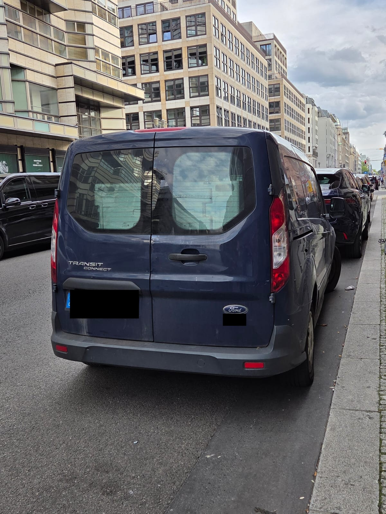

Der Rossotrudnitschestwo-Publikumsbetrieb in der Friedrichstraße ist faktisch beendet, ein großer Teil des entsandten Personals ist nach Russland zurückgekehrt und Einrichtung wurde in Fahrzeugen abtransportiert. Gebäude, technisches Personal und einzelne Nutzer bleiben davon getrennt zu betrachten. Was dabei aus dem Blick gerät: Berlin war ein Standort, nicht das Netz. Diese Seite sammelt, was nach dem Abzug weiterbesteht – und sagt bei jedem Punkt, wie belastbar er ist.
Dokumentiert heißt: durch Verträge, Register, amtliche Auskünfte oder Berichterstattung belegt.
Bekannt, aber ungeklärt heißt: die Verbindung ist nachgewiesen, ihre Fortsetzung nach dem Abzug nicht.
Beobachtung heißt: eine Wahrnehmung, die dokumentiert ist und eine Frage aufwirft – mehr nicht.
Dokumentiert · Recherche CORRECTIV, 3. September 2026
Die deutsche Vertretung von Rossotrudnitschestwo verwaltet ein Gebäude in der Zittauer Straße 29 in Dresden, eine einst von sowjetischen Truppen genutzte Villa. Russland führt sie nach Berichten des russischen Rechnungshofs von Januar 2018 und August 2019 als „Gebäude des Russischen Zentrums für Wissenschaft und Kultur“. Mieter ist seit Jahren der Verein Deutsch-Russisches Kulturinstitut, dem die Agentur die Liegenschaft laut denselben Berichten zwischen 2002 und mindestens 2019 unentgeltlich überlassen hat. Fragen nach dem aktuellen Mietverhältnis beantwortete der Verein nicht.
Das Angebot ähnelt dem des Berliner Hauses: Sprachkurse, Bibliothek, dazu ein Servicebüro zur Vorbereitung konsularischer Unterlagen für russische Staatsangehörige. Im Dezember 2025 stellte der Verein seine Räume einem russischen Juristen zur Verfügung, der eine Rechtsberatung für den Kauf von Immobilien in der besetzten Ostukraine anbot. Nach Berichten der Dresdner Neuesten Nachrichten beherbergte er zudem ein „Russisches Zentrum“, gefördert von der ebenfalls EU-sanktionierten Stiftung Russki Mir.
Als Grundlage für den Betrieb der Immobilie verweist Rossotrudnitschestwo auf eben jenes Abkommen von 2011, das die Bundesregierung nun gekündigt hat. Eine eigene Vereinbarung, der das sächsische Kabinett 2019 zugestimmt hatte, ist nach Angaben des Regierungssprechers nie in Kraft getreten. Das Auswärtige Amt teilte mit, die Liegenschaft habe keinen diplomatischen oder konsularischen Charakter; welche Folgen die Kündigung für Dresden hat, beantwortete das Ministerium nicht.
Beobachtung · eigenes Bildmaterial, 9. September 2026

Am 9. September, dem Tag, an dem t-online über den Abtransport der Einrichtung berichtete, hielt vor dem Russischen Haus ein Kastenwagen mit Dresdner Zulassung. Im Laderaum waren Kisten zu sehen. Eine Zeugin aus dem Umfeld der Mahnwache fotografierte das Fahrzeug und meldete die Beobachtung.
Dies ist kein Beleg für eine Verlagerung nach Dresden. Ein Fahrzeug mit Dresdner Kennzeichen in Berlin-Mitte kann jeden denkbaren Anlass haben, der Inhalt der Kisten ist unbekannt, der Halter für dieses Dossier nicht relevant und deshalb unkenntlich gemacht. Dokumentiert ist allein: Während CORRECTIV die Frage aufwirft, ob Dresden zum Ausweichort wird, und während das Berliner Haus geräumt wird, wird dort ein Fahrzeug aus Dresden beladen. Wer die Frage beantworten will, braucht Auskünfte, keine Fotos.
Dokumentiert für die Existenz der Nutzungen · ungeklärt für ihren Fortbestand
Die Ausreiseaufforderung galt dem entsandten Personal der Agentur, nicht den Firmen und Einrichtungen im Haus. Nach Angaben der kommissarischen Leiterin bleibt das Gebäude vorerst geöffnet und technisches Personal im Haus; Räume sind vermietet. Was das für die einzelnen Nutzer heißt, ist offen.
Im Erdgeschoss betreibt die RusPost GmbH nach eigenen Angaben die einzige Auslandsniederlassung der russischen Staatspost, eröffnet 2018 im früheren Pförtnerzimmer. Seit Februar 2026 unterhält der Dubaier Dienstleister Konsul Prime dort ein Partnerbüro für russische Konsulardokumente, betrieben nach eigenen Angaben von einer Bonner GmbH als Standortpartner. Ein kommerzielles Übersetzungsbüro führte die Adresse bis mindestens März 2026 als Geschäftsadresse und nennt inzwischen die Georgenstraße, verweist im Fließtext seiner Startseite aber weiter auf ein Büro in der Friedrichstraße. Der russischsprachige Buchladen im Gebäude will nach Auskunft eines Mitarbeiters in Berlin bleiben.
Ausführlich dokumentiert auf den Seiten Postannahmestelle, Konsul Prime und Übersetzungsbüro. Die Berliner Staatsanwaltschaft ermittelt seit April 2024 gegen Unbekannt beziehungsweise gegen Mieter im Haus wegen möglicher Verstöße gegen das Außenwirtschaftsgesetz.
Die Kündigung beendet das besondere Tätigkeitsregime des Kulturinstituts. Sie sagt nichts darüber, ob eine Paketannahme, ein Konsulardienstleister oder ein Übersetzungsbüro in demselben Gebäude weiterarbeiten. Wer zu welchen Bedingungen in einer von einer sanktionierten Agentur kontrollierten Immobilie sitzt, war schon vor dem 1. September ungeklärt und ist es weiterhin.
Bekannt, aber ungeklärt
Neben Dresden sind weitere Anknüpfungspunkte in Deutschland dokumentiert, deren Verhältnis zur Berliner Vertretung und deren Status nach der Kündigung für dieses Dossier nicht abschließend geklärt sind. Dazu zählen ein Russisch-Deutsches Kulturzentrum in Nürnberg mit einem von der Stiftung Russki Mir geförderten Russischen Zentrum sowie ein Verein in Magdeburg, der die Domain russischeshaus.de führt und nach vorliegenden Hinweisen Material aus Berlin und von der russischen Botschaft bezogen hat. Beides wird weiter recherchiert; belastbare Aussagen über eine Fortführung von Aufgaben stehen aus.
Ausgeschlossen werden konnte dagegen ein früher vermuteter Zusammenhang in Gelsenkirchen: Dort besteht keine Verbindung zu Rossotrudnitschestwo.
Dokumentiert als Ankündigung · Umsetzung offen
Während das größte Russische Haus der Welt schließt, kündigte Agenturchef Igor Tschaika die Eröffnung von elf weiteren an: acht in Afrika, zwei in Armenien, eines in Thailand. In ihrer Meldung zur Rückkehr der Berliner Beschäftigten schreibt die Agentur zudem, das Netz der Partner-Häuser wachse und die neuen Teams bräuchten Leute mit Erfahrung in internationaler humanitärer Arbeit – die Rückkehrer sollen dort eingesetzt werden.
Das ist zunächst eine Ankündigung, keine Eröffnung. Für die Bewertung des Berliner Vorgangs ist sie dennoch aufschlussreich: Der Rückzug aus Deutschland wird intern nicht als Ende, sondern als Umschichtung dargestellt. Das Personal wird nicht entlassen, sondern verteilt.
Nichts auf dieser Seite beweist, dass dieselbe operative Struktur an anderer Stelle unverändert weiterarbeitet. Was sich zeigen lässt, ist etwas anderes: Die deutsche Entscheidung betrifft einen Vertrag und ein Gebäude. Sie betrifft nicht automatisch eine Villa in Dresden, deren Nutzung auf keiner in Kraft getretenen Vereinbarung beruht, nicht die Firmen im Erdgeschoss der Friedrichstraße und nicht Vereine, die seit Jahren mit derselben Agentur und derselben Stiftung verbunden sind.
Die Frage, die der Kündigung folgt, lautet deshalb nicht, wann das Haus zumacht. Sie lautet, wer sich danach um das kümmert, was nicht mitgenommen wurde.
Zur russischen Darstellung des Rückzugs: Moskau reagiert → · Zur Vertragslage: Vertragsanalyse →
Stand: 14. September 2026. Die Recherche zu regionalen Strukturen wird fortgesetzt. Hinweise an kontakt@antwortseiten.org.